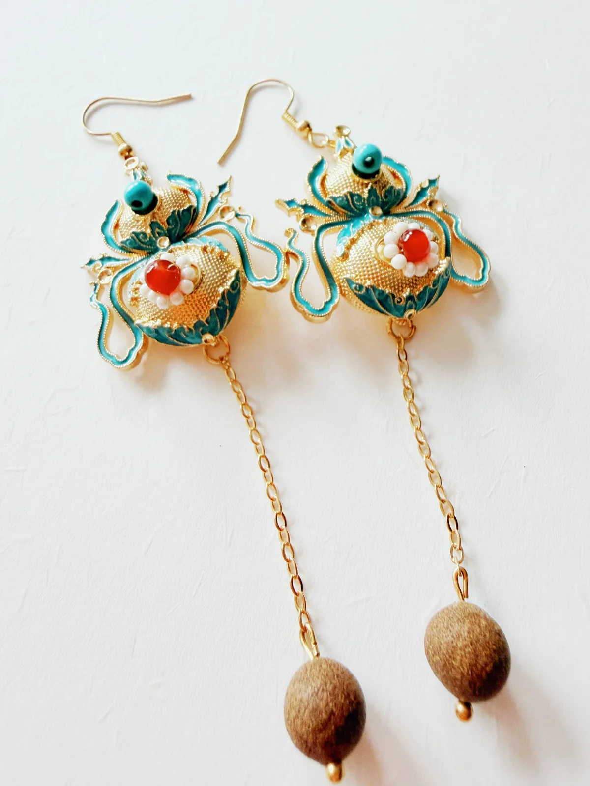
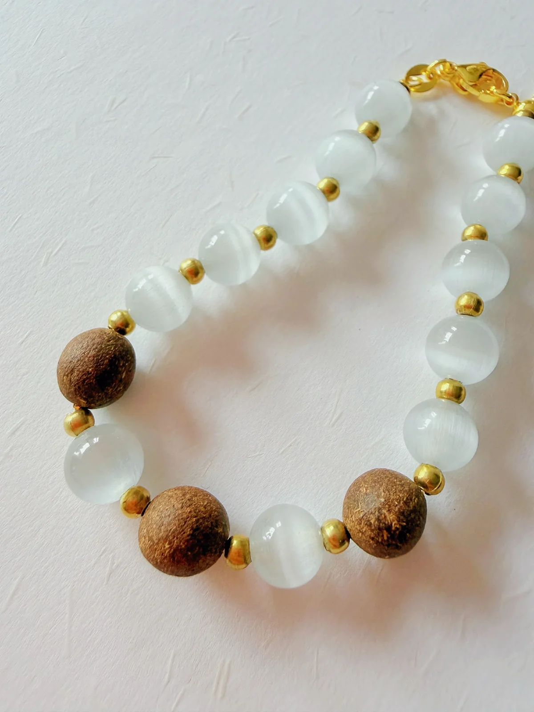
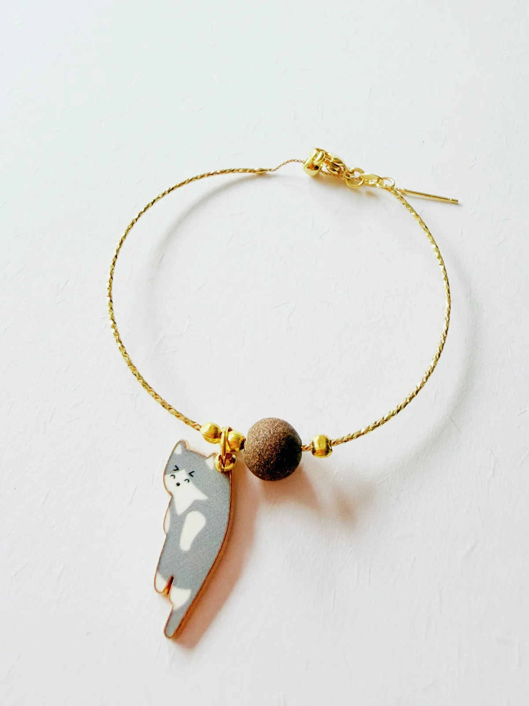
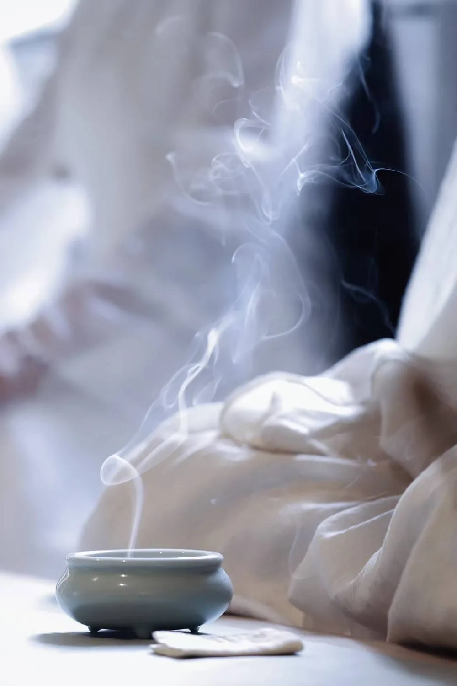
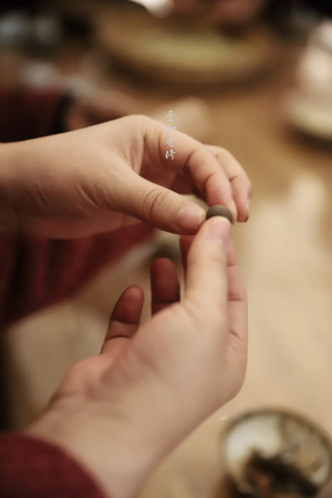
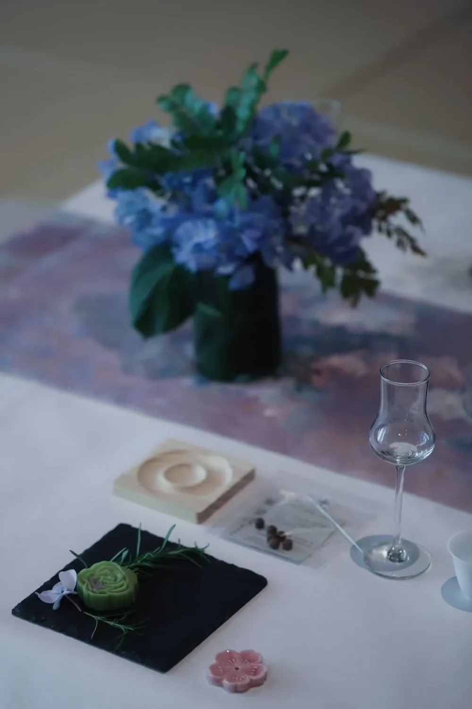
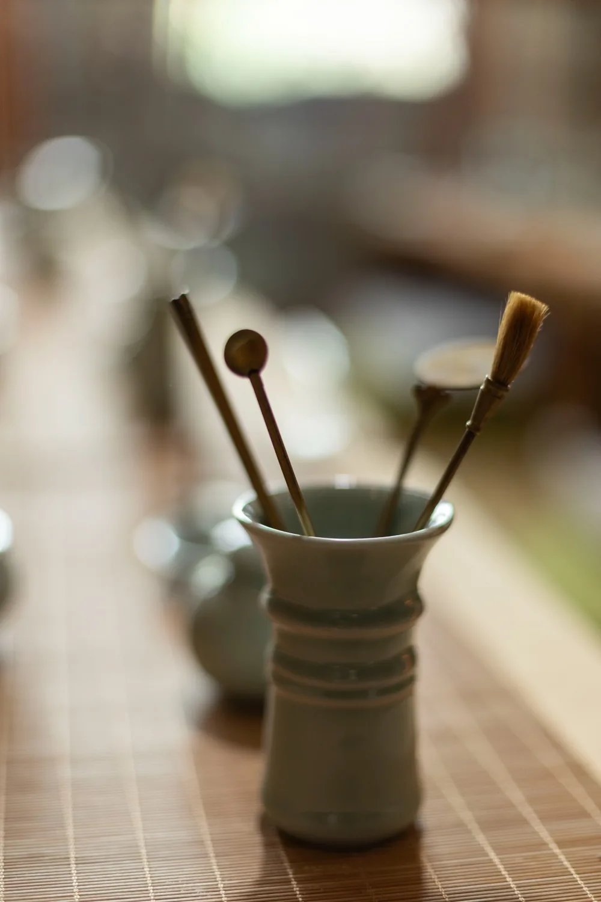
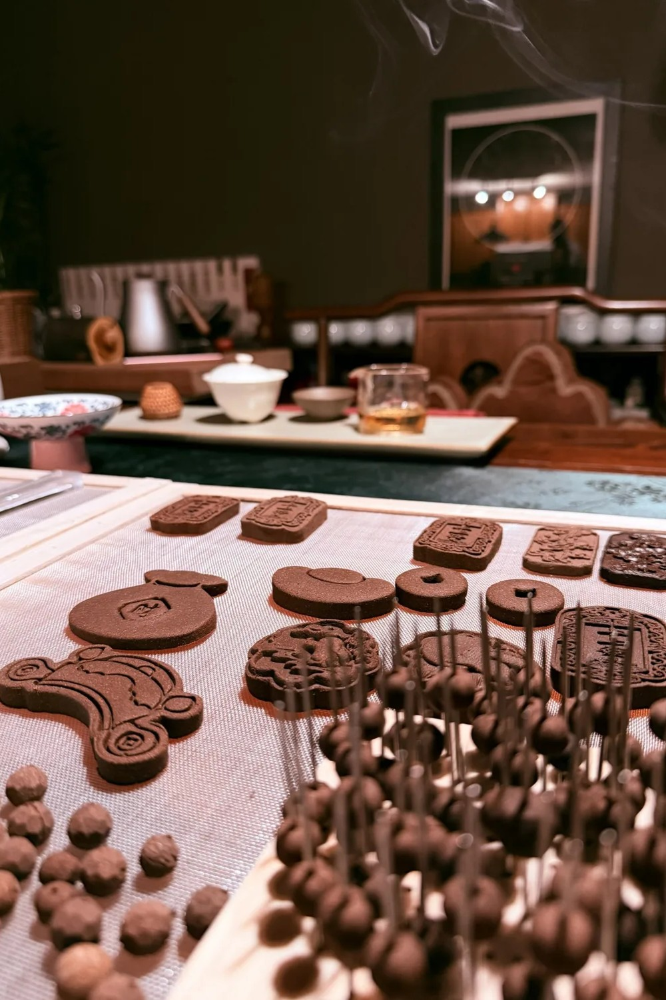
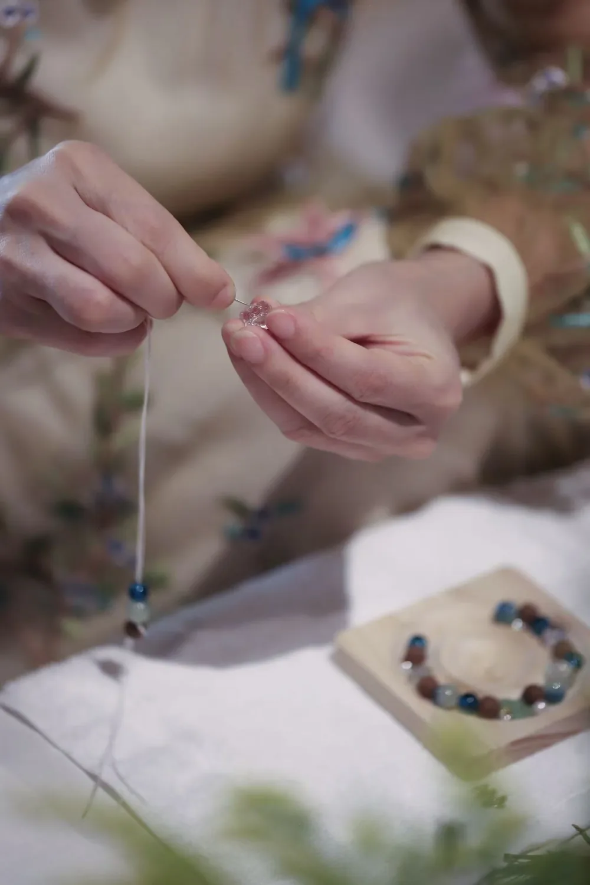

In Stock
In StockAromatic botanicals, warm woods, softly roasted warmth, and gentle resinous sweetness
View ProductZhioise centers on traditional stick incense and fragrant adornments, with a small selection of Chinese tea offered by inquiry. The collection grows slowly, while the visual and ritual language remains steady.
In StockAromatic botanicals, warm woods, softly roasted warmth, and gentle resinous sweetness
View Product In Stock
In StockImperial Peony is an incense shaped by time.
View Product In Stock
In StockRefined spice, gentle bitterness, warm woods, rich depth, and a long lingering finish
View Product In Stock
In StockFloral, woody, softly powdery, green, and honeyed
View Product In Stock
In StockClean sweet woods, leafy greens, delicate florals, and airy grasses
View Product In Stock
In StockThe Fragrance of Four Seasons Petite Set presents all twelve monthly seasonal incense selections in a compact format.
View ProductHandcrafted fragrant beads meet glass, pearls and ornamental details—small pieces made to bring natural aroma into everyday wear.

Museum-inspired ornamental motifs, reinterpreted with a handcrafted fragrant bead.
View Details
White cat-eye glass and warm fragrant beads in a softly luminous adjustable design.
View Details
Four playful cat charms, each paired with a single handcrafted fragrant bead.
View DetailsThe website presents the experiences that are possible rather than publishing weekly or monthly schedules. Dates, group size and format are arranged through inquiry.




Stillness rises with the incense.
Qingzhi is not a statement of self, but an intention: through incense, tea, and the quiet objects of daily life, to soften restlessness, settle the noise of the world, and let ordinary days hold stillness, grace, beauty, and light.
Read About ZhioiseThe rise of incense, the warmth of vessels, the grace of flowers, and the marks left by hand—each carries a lingering resonance.


